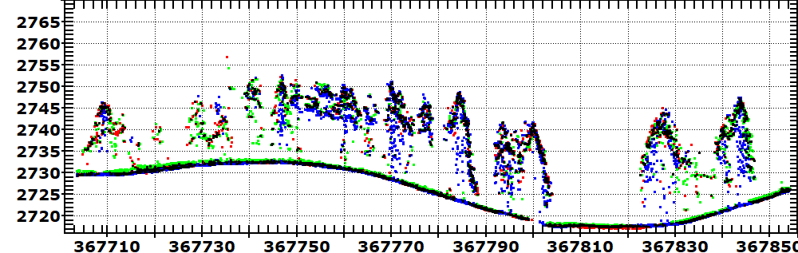
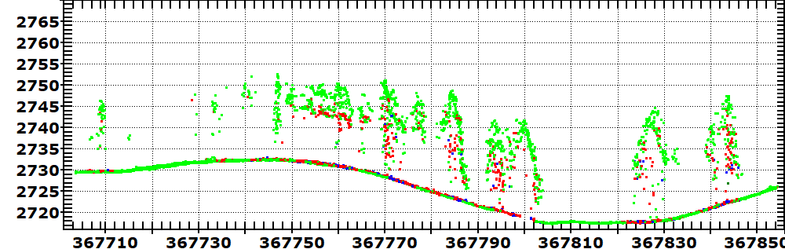
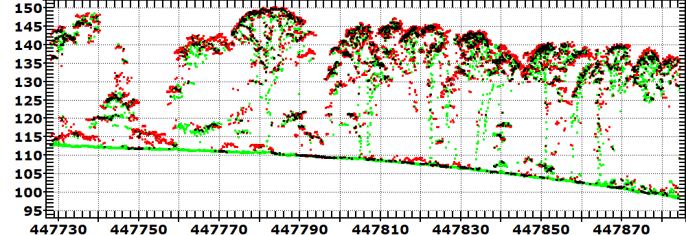
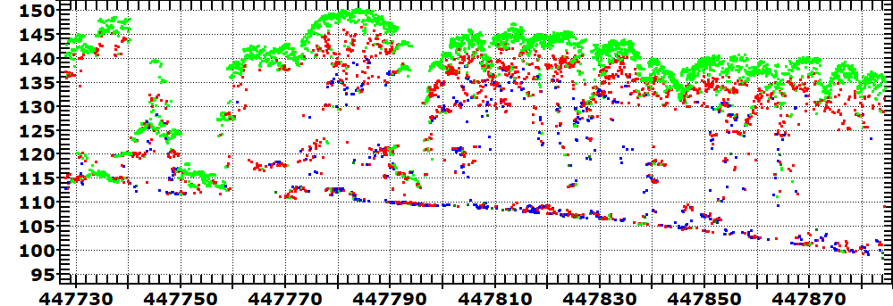

Lidar point clouds can provide a good depiction on tree form, and metrics on the canopy structure and height.
|
 |
Three surveys in New Mexico, in a western coniferous forest.
The first two surveys captured snow and non-snow, and the third showed
post-fire changes. In green, the spring survey with snow; the ground is higher through most of the region. One use of lidar is to predict summer runoff from the winter snowpack, and lidar can provide an effective way to monitor the snow pack and replace sending surveyors into the mountains in winter. In red, the summer survey. In blue, the post fire survey two years later. Note the increased number of returns in the vicinity of the trunks, reflecting the loss of needles and branches. Black locations have multiple returns.Note the conical shapes of the tree crowns, and the separation between individual trees. The tallest trees here are about 20 m high. |
|
 |
Return numbers. Green is the first return, from the top of the vegetation or the ground in the open area. Red is the second return, and blue the third. |
|
 |
Two surveys in Pennsylvania, in an eastern deciduous forest.
Red is leaf-on, and green is leaf-off. lack indicates returns from
both surveys. The canopy is fairly continuous at the top, and many fewer returns lower down. The tallest trees here are about 35 m tall. |
|
 |
Two surveys in Pennsylvania. Green is the first return, from the top of the vegetation or less commonly here the ground in the open area. Red is the second return, and blue the third. |
last revision 6/15/2020